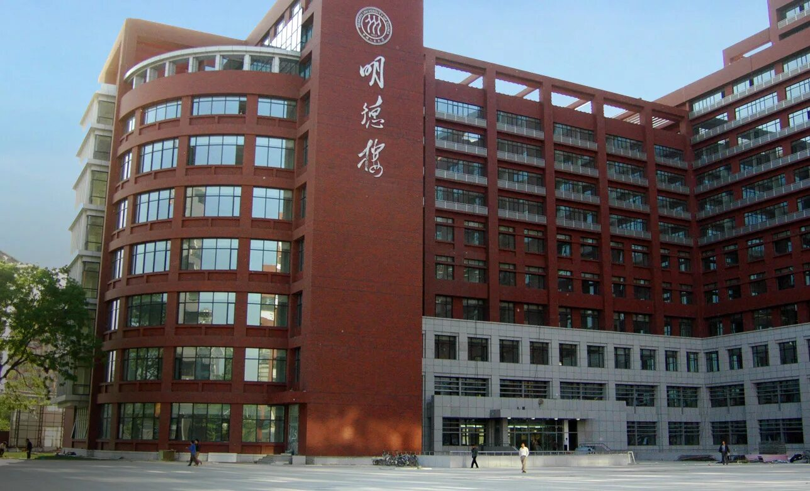
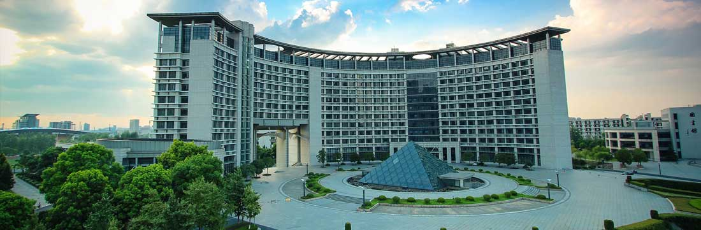

8 (800) 123-45-67
г. Москва, ул. Китайская, 1
Специализированные подразделения Академии «Хуа Я» для углублённого изучения китайского языка в различных направлениях

Основное подразделение Академии, занимающееся комплексным изучением китайского языка от начального до продвинутого уровня. Здесь студенты осваивают все аспекты языка: чтение, письмо, аудирование и говорение.
Программа института включает изучение иероглифики, грамматики, фонетики, а также погружение в культурный контекст через литературу, кино и современные медиа.
Специализированное подразделение для профессионалов, работающих с китайскими партнёрами или планирующих карьеру в международном бизнесе. Программа фокусируется на деловой лексике, этикете и практических навыках коммуникации.
Студенты изучают особенности ведения переговоров, составления документов, презентации проектов на китайском языке, а также культурные аспекты делового общения в Китае.

Уникальное подразделение, объединяющее изучение языка с глубоким погружением в китайскую культуру, историю, искусство и традиции. Идеально для тех, кто хочет стать профессиональным переводчиком или специалистом по Китаю.
Программа включает изучение классической литературы, каллиграфии, традиционных искусств, а также современные аспекты китайской культуры и общества.

Современное подразделение, предлагающее дистанционное изучение китайского языка через интерактивную платформу. Идеально для студентов из других городов и тех, кто предпочитает гибкий график обучения.
Платформа включает видеоуроки, интерактивные упражнения, живые занятия с преподавателями, автоматическую проверку заданий и персональную траекторию обучения.
Каждый институт предлагает уникальную программу обучения. Запишитесь на консультацию, и мы поможем выбрать оптимальное направление для ваших целей.
Записаться на консультацию